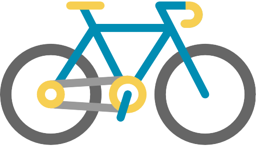
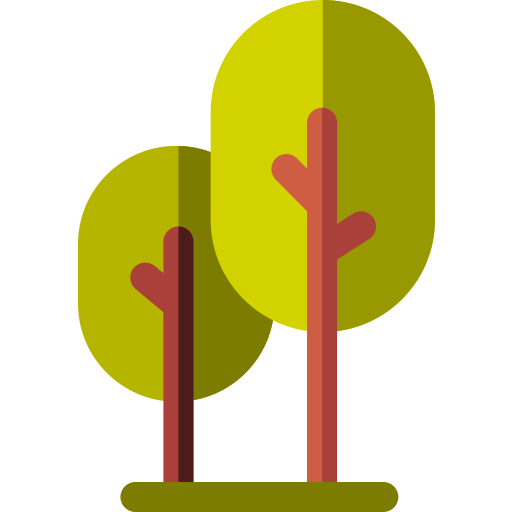

Região
Centro-Oeste
Infraestrutura
Quadras poliesportivas
Aparelhos de ginástica
 Playground
Playground
Pista de cooper / caminhada
Áreas de eventos / apresentações culturais
 Paraciclos
 Áreas de estar com mesas de xadrez
Minibiblioteca
Áreas de estar com mesas e bancos
Bosque de Leitura
 Sanitários acessíveis
Sanitários acessíveis
 Conselho Gestor
Conselho Gestor
Localização e Contato
 Rua Piratininga, 365 – Brás
Rua Piratininga, 365 – Brás
(11) 3207-4706
Horário de Abertura
06:00 ás 18:00
Área
26.568 m²
Como Chegar
Ônibus
2100-10 – Terminal Vila Carrão / Praça da Sé
2101-10 – Praça Silvio Romero / Praça da Sé
5630-10 – Terminal Grajaú / Metrô Brás
N401-11 – Terminal Vila Carrão / Terminal Parque Dom Pedro II
174M – 10 – Museu do Ipiranga / Jardim Brasil
274P-10 – Penha / Metrô Vila Mariana
Metrô - Estação Brás – Linha 3-Vermelha
Benemérito José Bras

Sobre o Parque
Reivindicação da comunidade, o parque está inserido num local densamente urbanizado, onde antes havia uma praça, junto à saída da estação Brás do Metrô. A área já era ocupada pela população para a prática de exercícios físicos e esportes, além de atividades infantis. O objetivo foi promover a melhora ambiental do bairro com o aumento de permeabilização do solo, arborização (com preservação das espécies já existentes) e implantação de equipamentos de lazer.
Fauna


Flora